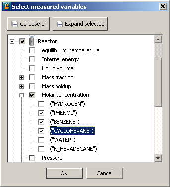

During an experiment, measurements of key variables are taken using sensors. The measured data for an experimental run should be entered in the table found on the Measured data tab of the Experiments Performed entity (shown below).
The Measured data table accepts the following information: the gPROMS name of the measured variable, a name for the sensor used (optional), a description of the measurement variance model for this sensor (optional) and the measured values at discrete points in time.
To add the experimental results for a particular variable, do the following:
Use the Select measured variables... button to populate the table using a dialog-based choice which will only display variables that the model developer has chosen to be suitable as control variables. See the section on dialog-based variable choice in Model Validation.

Alternatively, click the <new> cell table at the top of the window and type the full pathname of the measured variable
If you do not wish to type the pathname you can select the appropriate variable from a drop down list by holding the CTRL key down and hitting the SPACE button on your keyboard. The first time you do this, gPROMS will give you a list of relevant Units and Variables. Select the desired one and then repeat as necessary to drill down to the desired Variable.
The full pathname may be converted to a descriptive name in case the model interface has been configured accordingly. Depending on the chosen application preferences, it may not be possible to edit the table directly.
If you wish to give a name to the sensor that was used for the measurement, then do so in the corresponding part of the table, and press Enter.
If you wish to specify the variance model information for this particular sensor then click on the Variance model cell in the table. When you do so a dialog box will open. You need to then do the following:
Select the desired variance model from a drop down list and enter the initial guess and the lower and upper bounds for the relevant statistical parameters that will be used in the solution of the maximum likelihood parameter estimation problem.
If you wish to estimate the value of a given variance model parameter, then uncheck the Fixed value? box and enter appropriate lower and upper bounds.
Click OK to close the dialog box and apply the changes.
To add the measurement data points, click on the <new time> cell in the table on the Measured data tab. Enter the time and the corresponding value for the measured variable. It is possible to copy and paste data into the table from an Microsoft ExcelTM spreadsheet. To do so, first make sure that your Excel data has the columns in the same order as in the gPROMS table. Then do the following:
select the numerical data in Excel and copy it (Ctrl+C). Do not select the column headings in Excel
go to the gPROMS table and click on the cell containing <new time>. Paste the numerical Excel data (Ctrl+V).
Measured variables do not need to have a value recorded at every time point. It is valid to leave cells in the table blank.
To clear a single cell quickly, select the cell and press the space key.
To delete an entire row or column, select a cell in the desired row or column, then click the Delete row or Delete column button below the table (as appropriate).
It is possible to transpose the table using the transpose button below the table.